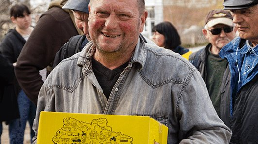
01Жовта коробка
Продуктовий набір для мешканців прифронтових територій та людей у кризовій ситуації. Кожна коробка — це тиждень спокою за столом і коротке слово про Євангеліє всередині.
З травня 2022
Наша допомога починається з простого: коробка з продуктами, відремонтований дах, тепла розмова. Але за кожним пакунком стоїть головне — коротке слово про Євангеліє і жива турбота церкви. Ми діємо разом із місцевими громадами на прифронтових територіях, серед переселенців, родин загиблих і військових.
Нести практичну допомогу і надію Євангелія людям, яких війна позбавила дому, засобів до життя та близьких.
Ми служимо через продуктову допомогу, відбудову зруйнованих домівок та підтримку військових — так, щоб кожна людина відчула Божу любов не лише словом, а й ділом.
Надія, яку можна потримати в руках
Церква, яка не проходить повз. Ми віримо, що через служіння милосердя українські громади стануть місцем відновлення — де зцілюються не тільки будинки, а й серця, і де надія Євангелія передається з рук у руки.
П'ять напрямків допомоги — від разового пакунка до повної відбудови дому.

01Продуктовий набір для мешканців прифронтових територій та людей у кризовій ситуації. Кожна коробка — це тиждень спокою за столом і коротке слово про Євангеліє всередині.
З травня 2022
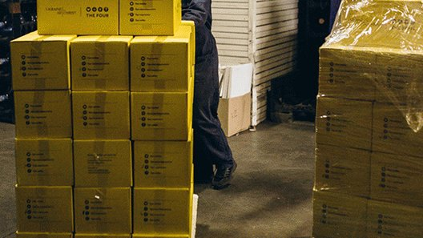
02Родини, які опинилися в найважчих обставинах, отримують допомогу системно — до 4 коробок на місяць через місцеві церкви-партнери.
До 4 коробок/міс • Через церкви
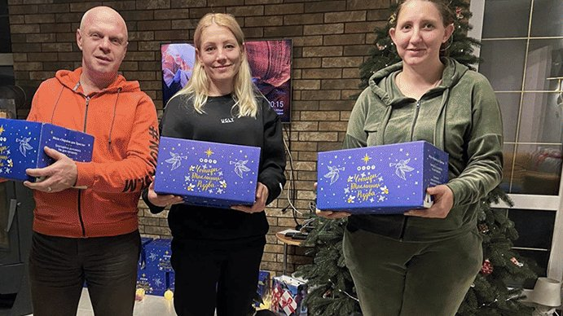
03Особливі набори для переселенців і родин, які цієї зими не мають з чого зробити свято. Мета сезону — 10 000 коробок.
Ціль: 10 000 коробок • Зима
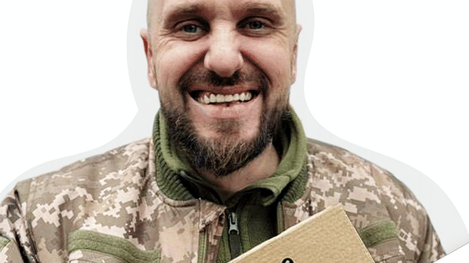
04Спеціальні набори для військових, які виконують бойові завдання: продукти, засоби першої потреби та капеланські матеріали для духовної підтримки.
Продукти • Капеланські матеріали
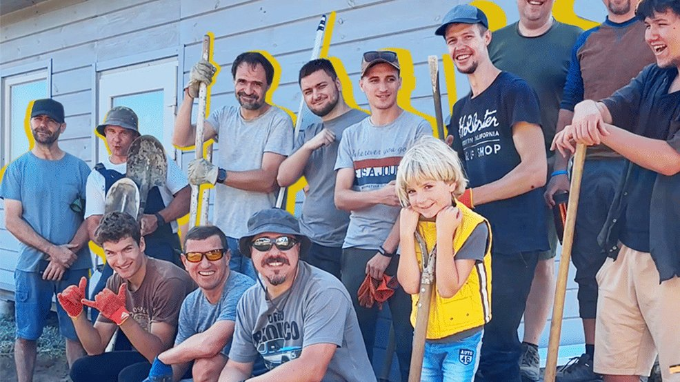
05Ремонтуємо будинки, пошкоджені обстрілами, у населених пунктах, куди вже безпечно повертатися. Обираємо родини в найскладніших обставинах — і повертаємо їм не просто стіни, а можливість жити вдома. Уже відбудовано 5 будинків.
5 відбудованих домівок • Деокуповані та безпечні громади
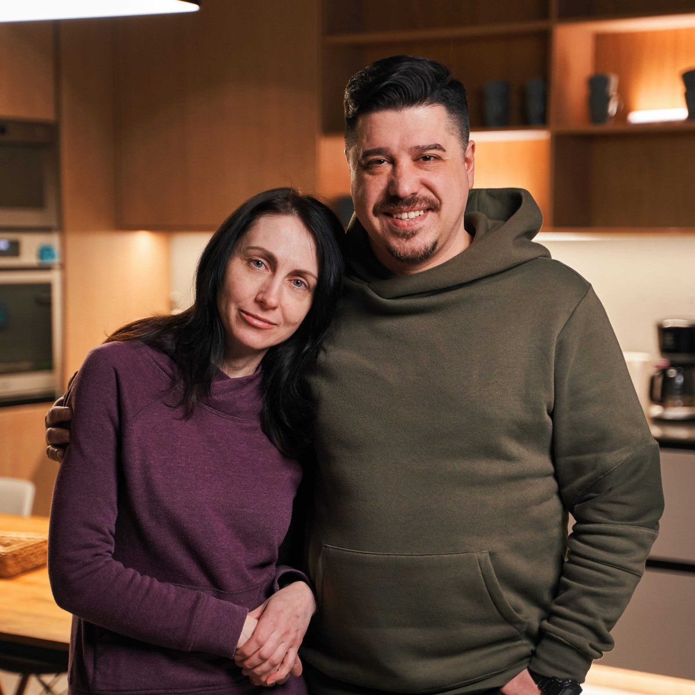
Координатори гуманітарного служіння УДХ
«Ми з Танею служимо в місії "Україна для Христа" вже 23 роки».
Діма — один із пасторів церкви «Нове життя» в Києві, випускник педагогічного університету та магістр богослов'я Одеської богословської семінарії. У травні 2022-го подружжя започаткувало проєкт «Жовта коробка», а з весни 2023-го Діма очолює гуманітарний напрямок місії.
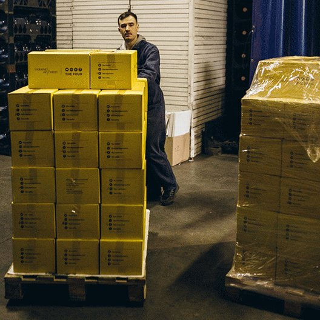
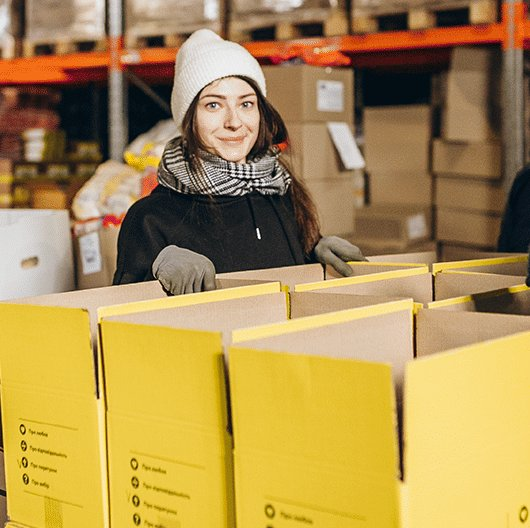
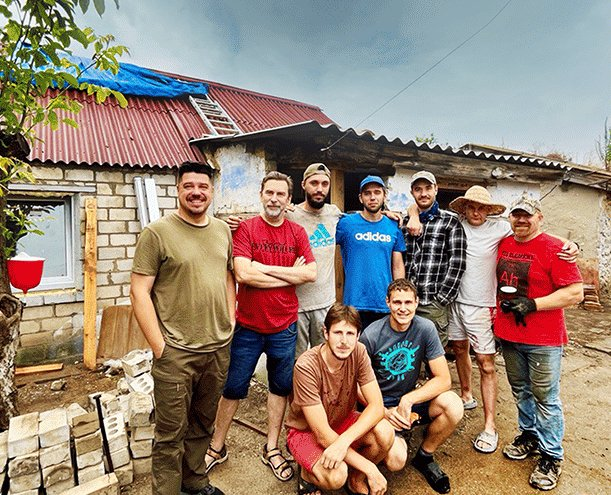
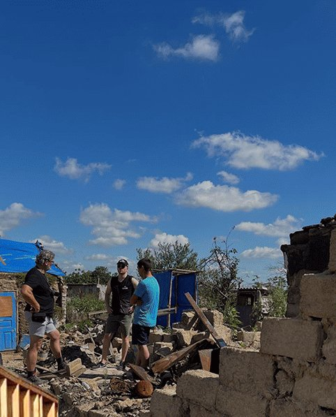
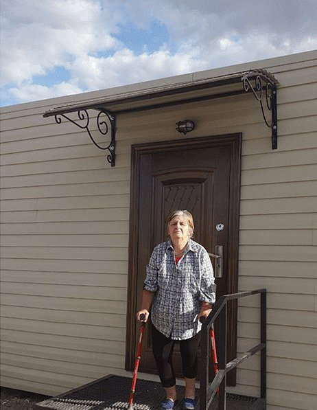
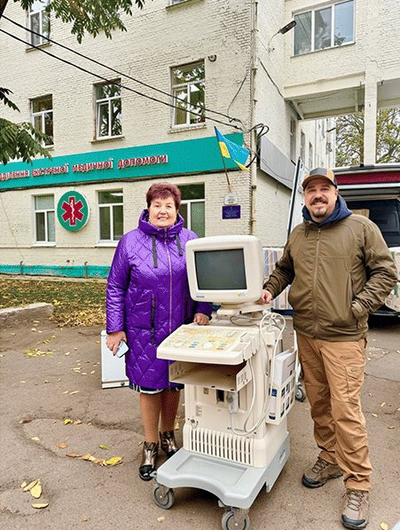
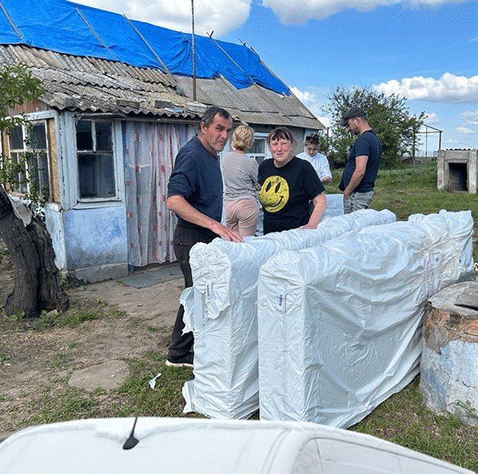
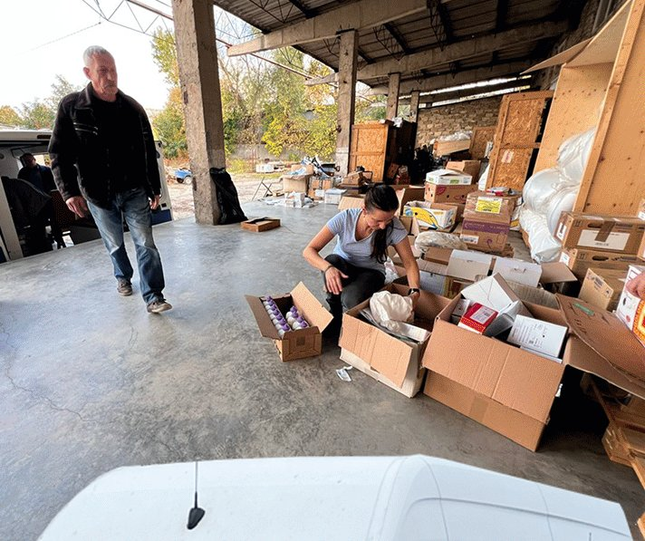
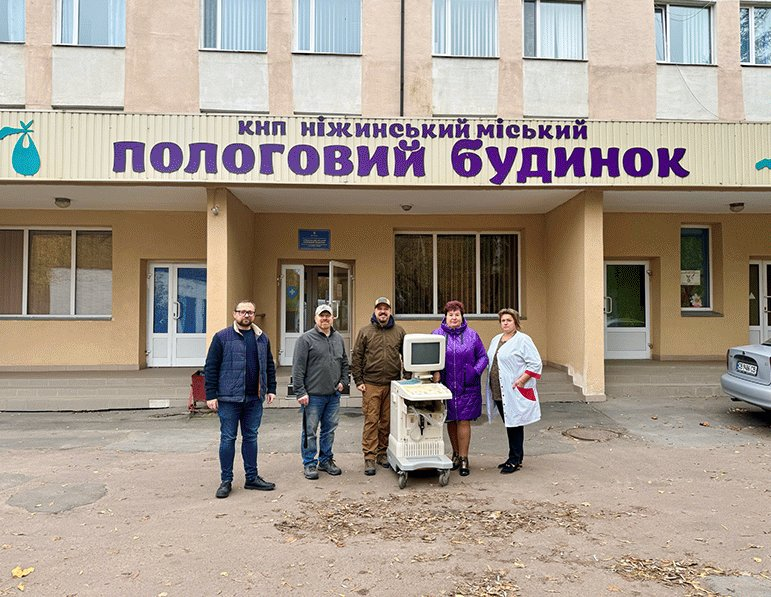
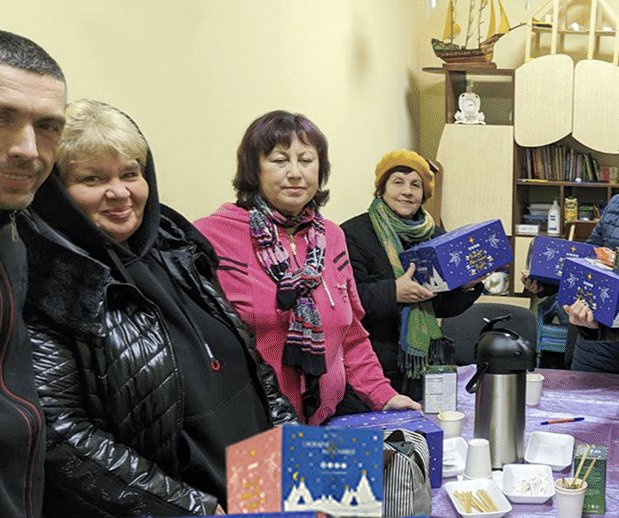
Кампанії проходять хвилями — долучитися можна як разово, так і на постійній основі.
Збір і формування різдвяних наборів для переселенців та родин, які цієї зими не мають ресурсу на свято.
Регулярна доставка продуктових наборів через мережу церков-партнерів у прифронтових областях.
Ремонт будинків, пошкоджених обстрілами, для родин у найскладніших обставинах.
Залиште свої контакти — координатор служіння зв'яжеться з вами, щоб розповісти, як саме ви можете допомогти: молитвою, пожертвою, волонтерством або як церква-партнер.
Кожна пожертва — це конкретні продукти, перекритий дах для родини або капеланський пакунок для захисників на нулі. Уся команда служить завдяки особистим партнерам.
Пропонуємо спільні партнерські проєкти та регулярну координацію.
Сайт гуманітарного напрямку місії «Україна для Христа»: історії, звіти та проєкти допомоги.
Разова або щомісячна пожертва через офіційну платформу CRU. Уся команда служить завдяки партнерам.
Стежте за роздачами, історіями родин і звітами про відбудову домівок.
«Мета цієї коробки — дати людям надію і показати Божу любов».
— Діма Тищенко, лідер гуманітарного служіння УДХ